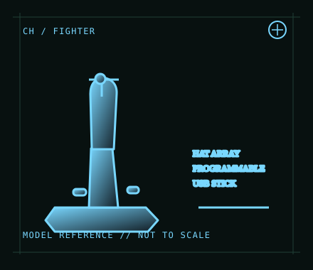

[ JOYSTICK CONTROLLERS // IDENTIFIED COMPONENT ]
CH Products Fighterstick USB
USB flight-simulation stick with a large set of buttons and hats for configurable aircraft controls.

MODEL IDENTIFICATION: CH Products Fighterstick USB; manufacturer quick-start reference 200-571 (verify label/revision). Published family specifications may not establish the revision or condition of an individual unit; compare its label and included parts with the linked documentation.
Model specifications
| Catalog subcategory | Joystick controllers |
|---|---|
| Exact model / identifier | CH Products Fighterstick USB; manufacturer quick-start reference 200-571 (verify label/revision). |
| Design and controls | Ambidextrous USB stick with three analog axes, trigger, push buttons, several 4-way hats and a POV hat. CH describes 24 buttons and extensive programmable assignments; profile behavior can vary with mode and Control Manager configuration. |
| Physical interface | Wired USB HID-style joystick input to a computer. The stick is separate from a throttle; connect optional controls independently and map them in the simulator. |
| Host compatibility | Manufacturer lists PC and Mac USB operation. Basic HID controls may work without the Windows-only programming suite, but simulator recognition and advanced mappings depend on the host OS and application. |
| Driver and configuration | Optional CH Control Manager software enables advanced programming on supported Windows systems; it is distinct from basic USB device enumeration. Use the current vendor downloads and test profiles on the intended Windows release. |
Setup and control mapping
Use X/Y axes for roll/pitch and the third axis for throttle or another simulator function. Allocate the trigger for primary action, hats for views/radios, and remaining buttons for landing gear, flaps or trim; verify each assignment rather than assuming the printed count maps one-to-one to simulator inputs.
Before use, connect the device directly to the stated host, confirm it appears once in the operating system’s controller list, and test every axis and button. Keep host calibration separate from in-game dead-zone and sensitivity settings so later maintenance can reproduce the baseline.
Preservation and service notes
Inspect the stick’s return, buttons and hat switches independently, and avoid carrying the stick by its cable. Record USB identity, firmware/software version if applicable, axis calibration and saved profile names with the host.
Revision caveat: Catalog this USB revision, not a similarly named older connector variant. The model’s large programmable button count depends on the software/profile layer; a basic HID host exposes only what its driver and application support.
For a physical archive entry, record the as-found label, serial/part number where present, accessories, host OS, driver or firmware version, and test method. Separate observed condition from published specifications.
References and support
- Fighterstick — CH Products product informationManufacturer product page for identifying the USB Fighterstick and its controls.
- Fighterstick quick-start reference — CH ProductsModel-specific manufacturer quick-start document and button map.
Vendor pages and downloads can be revised or retired. Preserve the applicable manual locally and note its revision; use the exact product label when choosing firmware or drivers.